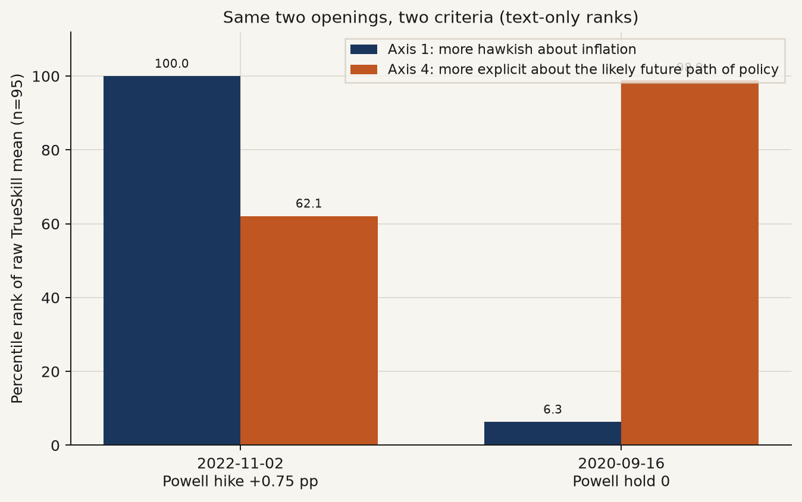
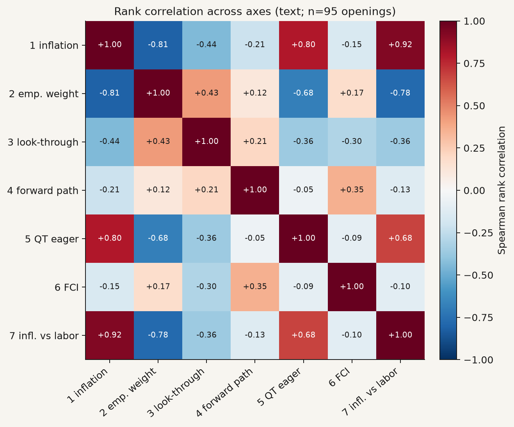
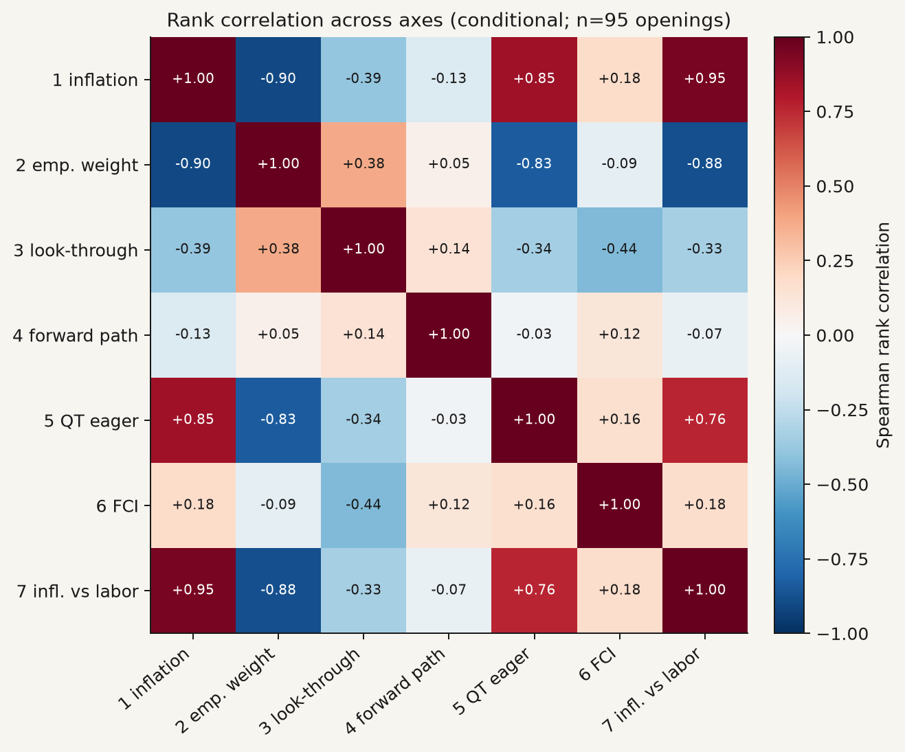
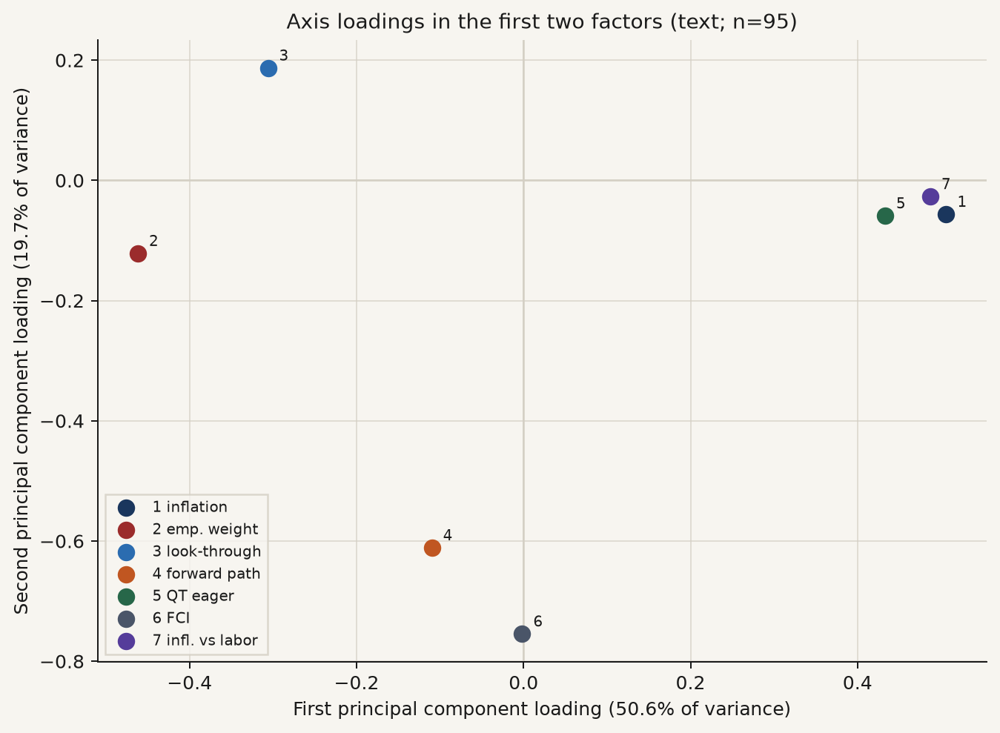
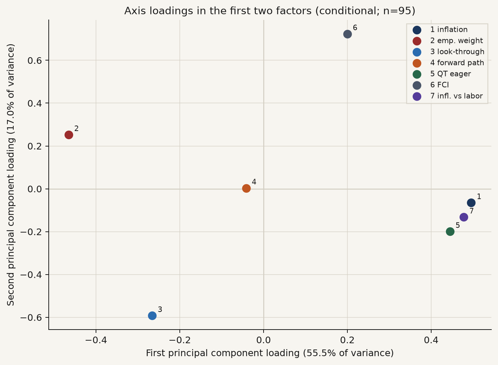
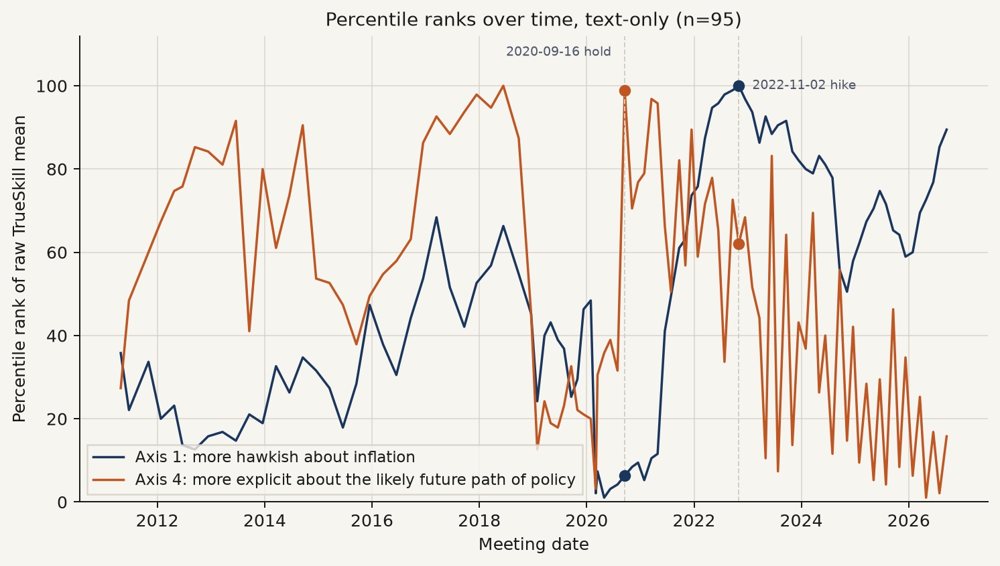
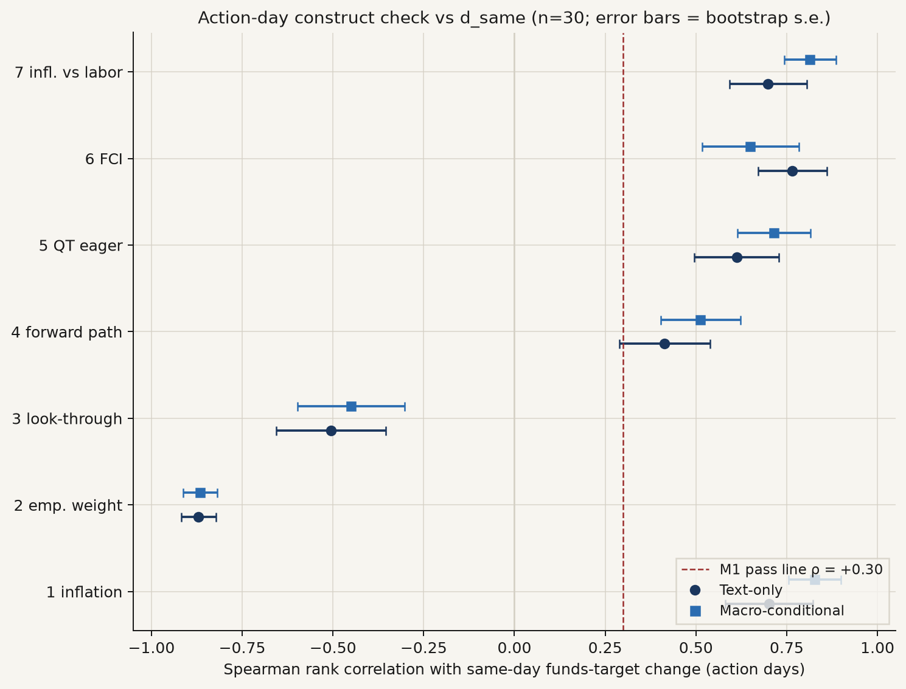
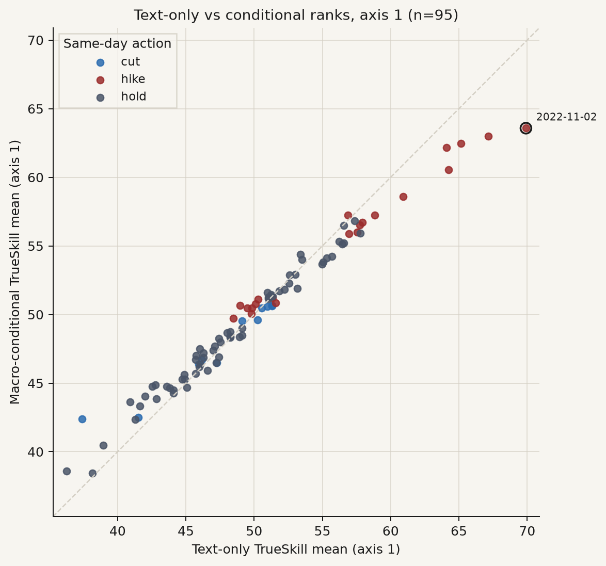

Seven criteria on chair openings
run_id: fedjev-multiaxis-2026-09-20 Judge: TypeSafe/Jev only (jev-latest). Claude Haiku was not run. Tracked spend: $1.5329 (filter $0.0552; pairwise Choice $1.4777). Corpus: 95 Federal Open Market Committee (FOMC) chair press-conference openings.
This note is written so a reader fluent in monetary policy, but not in natural-language processing, can reconstruct the measurement from the prose and the frozen files under results/multiaxis/. Numbers are copied from those files. None were invented for the write-up. The tournament was not re-run for this page.
Abstract
The main bench ranks chair openings on one pairwise question: more hawkish about inflation. That is a useful tightness measure. It is not the only thing a Chair can communicate. After a hiking cycle, openings can still differ on the labor-market side of the dual mandate, on whether a price-level shift is treated as transitory, on how explicit the future path is, on balance-sheet runoff, and on whether financial conditions are judged tight enough.
This extension asks whether those other questions are a second dimension in the same 95 openings, or mostly a re-wording of inflation hawkishness. Seven frozen criterion strings were ranked twice — text-only, and again with contemporaneous macro conditions attached — using the same adaptive TrueSkill tournament as the FedLock-style replica. The first principal component is inflation hawkishness in both designs (50.6 percent of variance text-only; 55.5 percent with macro conditions). A smaller second component remains (19.7 percent text-only; 17.0 percent conditional) and loads on forward-path language and financial-conditions language. Axis 7 is a near-duplicate of axis 1. Axis 2 is an inverted mirror. Axes 2–3 fail the pre-registered action-day rank check against the same-day funds-target change. Axes 4–6 pass that check but do not displace the first component. Text ranks do not cause rate changes.
What the names mean
Federal Open Market Committee (FOMC). The Federal Reserve committee that sets the federal funds target. The documents scored here are the Chair’s prepared opening remarks at the post-meeting press conference (data/clean/statements.jsonl, n=95). Question-and-answer drift is out of scope: the Q&A transcript is not vendored. Full-speech robustness is future work.
Behavioral label versus textual stance. The Committee’s voted action is a behavioral label. In this repository that label is d_same: the same-day change in the federal funds target, in percentage points (a hike is positive, a cut is negative, a hold is identically zero). A hold cannot say whether the wording of the hold was hawkish or dovish. Textual stance is a separate construct: how the opening ranks on a stated criterion relative to the other 94 openings.
Choice. The judge is shown two stripped passages (Text A, Text B) and must pick which is higher on a fixed criterion string. Presentation order is randomized each match so a left/right habit cannot pile onto one meeting.
TrueSkill. Microsoft’s Bayesian skill-rating system, originally built for matchmaking. Each opening starts with prior mean μ₀ = 50 and prior uncertainty σ₀ = 8.33. After a match the winner’s mean rises, the loser’s falls, and both uncertainties shrink. The tournament stops when every document has σ < 2.0, or at about 1,200 comparisons (with a per-document cap of 30). σ < 2 is a convergence rule, not a hawkishness threshold. It means further matches are unlikely to reorder that document much. This is the same aggregator family as the FedLock replica. It is not the main bench’s Bradley–Terry fit on a fixed gold-pair graph.
Raw mean versus era-adjusted mean. The raw TrueSkill mean (mu in the ranked tables) is the meeting’s absolute score on that axis. The era-adjusted mean (mu_era_adj) subtracts the calendar-quarter average of mu and then re-centers so the sample mean is unchanged. Use the raw mean to ask “which opening in 2011–2026 sounds most hawkish about inflation.” Use the era-adjusted mean to ask “which opening is hawkish relative to that quarter’s typical language.” Percentile columns percentile and percentile_era are those two series, ranked among the 95 openings (pandas rank(pct=True) × 100).
Spearman’s rank correlation (ρ). If you sort meetings by one series and again by another, how similar are the two orderings? +1 is identical ranks; 0 is no rank association; −1 is reversed ranks. The standard error (s.e.) reported with each ρ is the standard deviation of a bootstrap of meetings (see results/multiaxis/gates.json). This note writes “standard error” or “s.e.”
Principal component analysis. Here: take the 95 × 7 matrix of TrueSkill means, standardize each axis, and take the singular-value decomposition. The first principal component is the linear combination of the seven axes that accounts for the most shared variation. A loading is that axis’s weight on a component. Loadings and variance shares are in loadings_{text,conditional}.csv and analysis_summary.json.
Identity stripping. Before the judge sees a passage, scripts/strip_meta.py removes speaker titles, calendar dates, and chair surnames (Bernanke, Yellen, Powell, and the other names listed in that file). Chair identity is not placed in the judge’s input.
Text-only versus macro-conditional. In the text-only design the judge sees two passages and the criterion. In the conditional design each passage is also paired with Federal Reserve Economic Data (FRED) vintages as of that speech date: core personal consumption expenditures inflation (PCEPILFE, twelve-month percent change when computable); the civilian unemployment rate (UNRATE); real gross domestic product growth (GDPC1, quarter-over-quarter at a seasonally adjusted annual rate when available); the CBOE Volatility Index close (VIXCLS); and the Chicago Fed National Financial Conditions Index (NFCI). The instruction is to judge the criterion given those conditions. A 2 percent inflation remark in 2012 is not treated as the same stance as a 2 percent remark in 2022.
FedLock. An independent published text-scoring project. Gate M6 in this extension is rank agreement of axis 1 only with published FedLock raw TrueSkill mean m. The date join used the FedLock d field with an exact calendar match (no ±1-day offsets). That produced n = 4. The estimate is reported below and is too thin to interpret. This extension is not a FedLock replication.
Objectives
The main registered bench answers one measurement question: under the exact string more hawkish about inflation, do pairwise ranks recover easy hawk-versus-dove orderings and, on scheduled action days, agree in rank with d_same? That is a tightness question. It leaves open whether, after the Committee has already tightened, the openings still differ on something else.
“Something else after tightness” is an empirical claim about shared variation across criteria, not a claim about a second policy instrument. If six alternative questions merely restate inflation hawkishness, their TrueSkill means will line up with axis 1 (high rank correlation, same first principal component). If they pick up a distinct communication object — for example, how explicit the future path is, or whether financial conditions are judged tight enough — a second principal component will load on those axes, and those axes need not agree with d_same in the same way axis 1 does.
Two designs are required because the same words mean different things in different macro states. Text-only asks which passage is higher on the criterion as written. Macro-conditional asks the same criterion after attaching the five series above. Agreement between the two designs is a robustness check, not a second sample of meetings.
The seven criterion strings were frozen before looking at ranks. They are reproduced exactly. Axis 5’s frozen string uses QT for quantitative tightening — runoff of the Federal Reserve’s securities holdings.
more hawkish about inflation(baseline)places more weight on employment downside than on inflation upsidemore willing to treat a price-level shift from tariffs, energy, or supply as transitory and look through itmore explicit about the likely future path of policy; less purely data-dependentmore eager to shrink the balance sheet and less worried that QT will impair reserves or market functionmore concerned that financial conditions are not restrictive enough, rather than worried they will overshootsees upside inflation risks as larger than downside labor-market risks
Axis 1 is the main-bench question. Axis 7 was included as a close paraphrase of the inflation-versus-labor risk balance; the pre-registered redundancy rule was to drop a near-duplicate if |ρ| versus axis 1 is at least 0.90. Axes 2–6 are the candidates for “something else.”
Pre-registered gates (REPORT, “before looking”):
| Gate | Question | Pass / report |
|---|---|---|
| M1 | Spearman(μ, d_same) on scheduled action days, excluding the two pre-specified crisis dates 2020-03-03 and 2020-03-15 | pass if ρ ≥ +0.30 (with s.e. and a bootstrap interval) |
| M2 | Hold versus cut mean-μ gap | pass if mean(holds) > mean(cuts) |
| M3 | Spearman versus same-day two-year yield move | report |
| M4 | Next-meeting Summary of Economic Projections medians | skip; not vendored |
| M5 | Quantitative-tightening pace label for axis 5 | skip; no separate numeric label in meetings.csv |
| M6 | Agreement with published FedLock m | axis 1 only; secondary |
| M7 | Factor / redundancy | report: is axis 1 the first principal component? is there an economically readable second component? drop an axis if its absolute rank correlation with axis 1 is at least 0.90 |
| M8 | Alternative versus axis 1 | fail-as-redundant if the alternative’s M1 ρ is statistically indistinguishable from axis 1 and the absolute rank correlation with axis 1 is at least 0.90 |
M1 is a construct check: does the axis separate meetings the way a funds-target observer would expect on days the target moved? It is not a structural estimate of communication on rates.
Approach
A reader who wants to recompute the tables from disk, without calling the judge, can follow this sequence.
- Confirm the corpus: 95 openings in
data/clean/statements.jsonl. Meeting labels, including chair andd_same, are indata/labels/meetings.csvand the derived filedata/labels/multiaxis_meeting_context.csv. - Confirm identity stripping in
scripts/strip_meta.py(titles, dates, chair surnames). - Confirm the per-axis paragraph filter. Each axis has a filter string (what to keep) that is not the same as the criterion string (what to rank). Filters are in
scripts/run_multiaxis.py(AXES) andresults/multiaxis/filter_summary.json. The live run usedjgrep --parawith--budgetpinned and--max-chars 8000. If the filter kept no paragraph, the document fell back to the full stripped opening and is flaggedfilter_empty=truein the score files. The kept-passage cachefiltered_passages.jsonis gitignored (it is regenerable and large). Emptiness counts below are fromfilter_summary.json. - Confirm macro vintages in
results/multiaxis/macro_asof.json(also copied todata/labels/multiaxis_macro_asof.json): core personal consumption expenditures year-over-year, unemployment rate, real GDP growth, VIX, and the Chicago Fed index, each as-of the speech date. - Read the 14 tournament logs:
results/multiaxis/comparisons/{axis}__{text|conditional}.jsonl. Each line is one Choice. Soft TrueSkill updates interpolate a decisive win and a decisive loss by the judge’s probability that A wins. - Read the fitted ratings:
results/multiaxis/scores/*.csvand the action-joinedranked/*.csv(columnsmu,mu_era_adj,sigma,percentile,percentile_era,n_comps,action,d_same). - Read the 7 × 7 Spearman matrices (
corr_{text,conditional}.csv), the singular-value loadings (loadings_*.csv), and the gate table (gates.json). Factor commentary is inanalysis_summary.json. - Read listed-price accounting from
cost.json. Jev is priced here at $0.042 per million input tokens; output is treated as free.
To rebuild the tournament from the same protocol (optional; not required to read this note), the entry point is scripts/run_multiaxis.py. Do not mutate data/pairs/gold_pairs.jsonl for the frozen main run fedjev-2026-09-20. This extension has its own run_id and does not write that gold file.
Pairing. Swiss-style with uncertainty targeting: the next match prefers documents that still have high σ and opponents with a similar μ, matching scripts/run_fedlock_replica.py. Dual-order Choice is the FedLock-replica convention: A/B presentation is randomized; a separate order-swap check on axis-1 text (n = 30 pairs) recorded flip rate 0.0 and mean absolute change in the judge’s probability of 0.032 (order_swap_check.json).
Filter emptiness (do not ignore). Axis 1 and axis 4 emptied 0 of 95 openings. Axis 6 emptied 1. Axis 5 emptied 6. Axis 3 emptied 36. Axis 2 emptied 61. Axis 7 emptied 66. Those empty documents were ranked on the full stripped opening. Sparse-axis ranks — especially axes 2, 3, and 7 — mix a narrow keep-set with a fallback to the whole text. Mean paragraphs kept: axis 1 = 3.82; axis 4 = 3.72; axis 6 = 3.19; axis 5 = 1.83; axis 3 = 0.91; axis 2 = 0.52; axis 7 = 0.46 (filter_summary.json).
Cost and stopping (observed). Fourteen tournaments produced 15,469 comparisons. Ten stopped on all_sigma_lt_2. Four hit the 1,200-comparison cap (max_comps): text-only axis 1, text-only axis 2, and both designs of axis 7. On those four, max σ remains above 2 (axis-1 text max σ = 2.382). Conditional axis 1 stopped on all_sigma_lt_2 (1,128 comparisons; max σ = 1.998). Wall time 521.4 seconds. Hard cap was $5; target was about $3; tracked spend was $1.5329.
Worked example: 2 November 2022
Pick one opening and watch the same words score differently when the criterion changes.
Meeting. 2 November 2022. Chair Powell. Scheduled FOMC meeting. Same-day funds-target change d_same = +0.75 percentage points (a 75-basis-point hike). Two-year yield change that day d_2y = +0.07 percentage points. Source: data/labels/meetings.csv and results/multiaxis/ranked/ax1_inflation_hawkish__text.csv. Macro as-of that date (macro_asof.json): core personal consumption expenditures inflation 5.208 percent year-over-year; unemployment rate 3.6 percent; real GDP growth 2.790 percent quarter-over-quarter at an annual rate; VIX 25.86; Chicago Fed index −0.125.
The opening used as the source document is stmt-2022-11-02 in data/clean/statements.jsonl (6,610 characters). Axis 1 and axis 4 filters were non-empty for this meeting (those axes emptied 0 of 95). The exact jgrep keep-set is not vendored (filtered_passages.json is gitignored). The excerpts below are from that published opening. They are the sentences a reader would expect each filter to retain: inflation and restrictiveness for axis 1; path-versus-data-dependence for axis 4.
Axis 1 excerpt (criterion more hawkish about inflation):
My colleagues and I are strongly committed to bringing inflation back down to our 2 percent goal. We have both the tools that we need and the resolve it will take to restore price stability on behalf of American families and businesses. … Today, the FOMC raised our policy interest rate by 75 basis points. And we continue to anticipate that ongoing increases will be appropriate. We are moving our policy stance purposefully to a level that will be sufficiently restrictive to return inflation to 2 percent.
Axis 4 excerpt (criterion more explicit about the likely future path of policy; less purely data-dependent):
Even so, we still have some ways to go, and incoming data since our last meeting suggest that the ultimate level of interest rates will be higher than previously expected. Our decisions will depend on the totality of incoming data and their implications for the outlook for economic activity and inflation.
The first block commits to restoring price stability and to further increases until policy is “sufficiently restrictive.” The second block puts the level of the path back on incoming data. A pairwise Choice that asks only axis 1 should treat this opening as extremely hawkish about inflation. A pairwise Choice that asks only axis 4 should treat it as less path-explicit than openings that announce an outcome-based rule.
Text-only ranks among 95 openings (ranked/*.csv):
| Axis (text-only) | μ | Percentile | Era-adjusted percentile | n comparisons |
|---|---|---|---|---|
1 more hawkish about inflation | 69.91 | 100.0 | 98.9 | 26 |
4 more explicit about the likely future path of policy; less purely data-dependent | 51.78 | 62.1 | 29.5 | 23 |
6 more concerned that financial conditions are not restrictive enough… | 57.97 | 100.0 | 77.9 | 21 |
The same meeting is the top inflation-hawkish opening in the sample and only the 62nd percentile on path explicitness. Era-adjustment barely moves axis 1 (still 98.9) and lowers axis 4 to the 29.5th percentile: relative to 2022Q4 language, the data-dependence clause is not unusually path-explicit.
How a pairwise Choice would differ. Compare 2 November 2022 with 16 September 2020, also Chair Powell, a scheduled hold (d_same = 0). That opening announced outcome-based guidance: the Committee expected to hold the 0 to ¼ percent target range “until labor market conditions have reached levels consistent with the Committee’s assessments of maximum employment and inflation has risen to 2 percent and is on track to moderately exceed 2 percent for some time” (stmt-2020-09-16). Text-only ranks:
| Meeting | Action | Axis 1 percentile | Axis 4 percentile |
|---|---|---|---|
| 2022-11-02 | hike +0.75 | 100.0 | 62.1 |
| 2020-09-16 | hold 0 | 6.3 | 98.9 |
Under criterion 1, 2 November 2022 ranks above 16 September 2020 (100.0 versus 6.3). Under criterion 4 the order reverses (62.1 versus 98.9). That reversal is the operational meaning of “something else”: the two questions do not induce the same pairwise winners. The tournament did not have to show this exact pair; the ranks are the aggregation of the adaptive matches that were run. Conditional ranks tell the same story (axis 1: 100.0 versus 4.2; axis 4: 71.6 versus 88.4).
Era-adjustment on 16 September 2020 is a warning label, not a second sample. Raw axis-1 percentile is 6.3; era-adjusted is 92.6, because 2020Q3 language is itself very easy. The quarter-mean subtraction makes a still-dovish opening look less unusual inside that quarter. Report both columns; do not substitute one for the other.

more hawkish about inflation. Axis 4 uses more explicit about the likely future path of policy; less purely data-dependent. Source: results/multiaxis/ranked/ax1_inflation_hawkish__text.csv and ax4_forward_path__text.csv.Figures
Existing run figures remain in results/figures/multiaxis_*.png (copied to docs/figures/). The panels below are redrawn from the same JSON/CSV for this page. They do not re-estimate TrueSkill.

results/multiaxis/corr_text.csv.
results/multiaxis/corr_conditional.csv.The tournament script’s original heatmaps (results/figures/multiaxis_corr_{text,conditional}.png) show the same matrices with the long axis identifiers.

results/multiaxis/loadings_text.csv and analysis_summary.json.
results/multiaxis/loadings_conditional.csv.The original bar charts of the same loadings are results/figures/multiaxis_loadings_{text,conditional}.png.

results/figures/multiaxis_timeseries_text.png; that panel is harder to read and is left as a supplement.
d_same on scheduled action days, excluding 2020-03-03 and 2020-03-15 (n = 30). Error bars are the bootstrap standard error from gates.json. The dashed line is the pre-registered pass value ρ = +0.30. Circles are text-only; squares are macro-conditional. Axes 2 and 3 are negative. Axis 1 text-only is +0.702 (s.e. = 0.121); axis 1 conditional is +0.827 (s.e. = 0.073). The original grouped-bar version is results/figures/multiaxis_gates_dsame.png.
results/multiaxis/ranked/ax1_inflation_hawkish__{text,conditional}.csv.Findings
Factor structure (gate M7)
| Design | First-component variance | Dominant axis | Second-component variance | What loads on the second component |
|---|---|---|---|---|
| text-only | 50.6% | ax1_inflation_hawkish | 19.7% | forward path (−0.611) and financial-conditions restrictiveness (−0.755) |
| conditional | 55.5% | ax1_inflation_hawkish | 17.0% | look-through (−0.592) versus financial-conditions restrictiveness (+0.724) |
Axis 1 is the first principal component in both designs. A second factor exists and is economically readable — guidance and financial-conditions language in the text-only design; look-through versus financial conditions once macro is attached. It is smaller than the first component. Remaining components (text-only third = 14.2 percent; fourth = 5.9 percent) are not interpreted here.
Near-duplicates to drop (|ρ| ≥ 0.90 versus axis 1). Axis 7, both designs (text-only +0.923; conditional +0.952). Under the conditional design, axis 2 also crosses the threshold at −0.902: it is a sign-flipped copy of inflation hawkishness, not a new positive factor. Text-only axis 2 is −0.810, below the drop line but already an inverted mirror (see M1).
Action-day construct check (gate M1)
Scheduled action days, crisis dates excluded, n = 30. Pass if ρ ≥ +0.30.
| Axis | Criterion (exact) | Text-only ρ (s.e.) | Conditional ρ (s.e.) | M1 |
|---|---|---|---|---|
| 1 | more hawkish about inflation | +0.702 (0.121) | +0.827 (0.073) | PASS |
| 2 | places more weight on employment downside than on inflation upside | −0.870 (0.048) | −0.866 (0.047) | fail |
| 3 | more willing to treat a price-level shift from tariffs, energy, or supply as transitory and look through it | −0.505 (0.151) | −0.451 (0.147) | fail |
| 4 | more explicit about the likely future path of policy; less purely data-dependent | +0.414 (0.125) | +0.513 (0.109) | PASS |
| 5 | more eager to shrink the balance sheet and less worried that QT will impair reserves or market function | +0.612 (0.116) | +0.715 (0.101) | PASS |
| 6 | more concerned that financial conditions are not restrictive enough, rather than worried they will overshoot | +0.765 (0.095) | +0.650 (0.133) | PASS |
| 7 | sees upside inflation risks as larger than downside labor-market risks | +0.699 (0.106) | +0.815 (0.072) | PASS (near-duplicate of 1) |
Bootstrap 95 percent intervals are in gates.json (ci_low, ci_high). Axis 1 text-only: [+0.403, +0.867]. Axis 1 conditional: [+0.635, +0.923]. Axis 2 text-only: [−0.922, −0.745] — the negative sign is estimated, not a noisy zero.
Axis 2’s failure is the sign the criterion asked for. A meeting that “places more weight on employment downside than on inflation upside” should rank opposite a hike on d_same. That makes axis 2 a useful mirror of axis 1. It does not make it a second tightness measure, and the M1 pass rule was written as ρ ≥ +0.30, not |ρ| ≥ 0.30.
Axis 3 fails in the same direction: more look-through ranks against hikes (text-only −0.505, s.e. = 0.151). Combined with 36 of 95 empty filters, treat axis 3 as a weak, sparse contrast, not as a replacement first component.
Other pre-registered rows
M2 (hold versus cut mean gap). On axis 1 the hold mean is not above the cut mean: text-only gap = −0.95 (s.e. = 0.99; mean hold 48.26, mean cut 49.21; n_hold = 63, n_cut = 9). Conditional gap = −0.49 (s.e. = 0.86). Both fail M2. The main bench’s Gate 4 finding — holds sit above cuts on Bradley–Terry / Score — does not reproduce on this TrueSkill axis-1 tournament. The cut cell is small (n = 9). Do not over-read the sign.
M3 (two-year yield). Action-day Spearman of axis-1 text-only μ versus d_2y is −0.165 (s.e. = 0.184, n = 30). The interval includes zero. Same-day dollar-index and Chicago Fed weekly-change proxies are in gates.json and are similarly inconclusive on action days.
M4 / M5. Summary of Economic Projections medians were not vendored; skipped. No separate quantitative-tightening pace label exists in meetings.csv; axis 5 is validated only against d_same / d_2y.
M6 (FedLock m, axis 1 only). Exact-date join to published press-conference m produced n = 4. Spearman = +0.400 (s.e. = 0.669; interval [−1.0, +1.0]). That is a reporting obligation, not an estimate anyone should use. The main bench’s Gate 7 (n = 90, ρ = +0.944, s.e. = 0.016) and the 95-opening TrueSkill replica remain the FedLock comparisons.
M8 (redundant alternatives). Axis 7 is a near-duplicate of axis 1 on the rank-correlation rule and has an M1 ρ indistinguishable from axis 1 (text-only +0.699 versus +0.702). Drop it. Axis 2 is a near-duplicate mirror under the conditional design and fails M1. Axes 4–6 are not near-duplicates of axis 1 (text-only ρ versus axis 1: −0.211, +0.798, −0.153) and pass M1, but they do not become a second first component.
Tournament accounting
| Tag | Comparisons | Stop | Max σ | Near-0.5 pairs |
|---|---|---|---|---|
ax1_inflation_hawkish__text | 1200 | max_comps | 2.382 | 149 |
ax1_inflation_hawkish__conditional | 1128 | all_sigma_lt_2 | 1.998 | 228 |
ax2_emp_vs_infl__text | 1200 | max_comps | 2.324 | 178 |
ax2_emp_vs_infl__conditional | 1175 | all_sigma_lt_2 | 1.994 | 149 |
ax3_lookthrough__text | 1034 | all_sigma_lt_2 | 1.996 | 213 |
ax3_lookthrough__conditional | 987 | all_sigma_lt_2 | 1.978 | 255 |
ax4_forward_path__text | 1081 | all_sigma_lt_2 | 1.983 | 157 |
ax4_forward_path__conditional | 1081 | all_sigma_lt_2 | 1.956 | 207 |
ax5_qt_eager__text | 1175 | all_sigma_lt_2 | 1.975 | 211 |
ax5_qt_eager__conditional | 1034 | all_sigma_lt_2 | 1.986 | 172 |
ax6_fci_restrictive__text | 987 | all_sigma_lt_2 | 1.989 | 309 |
ax6_fci_restrictive__conditional | 987 | all_sigma_lt_2 | 1.980 | 284 |
ax7_infl_vs_labor_risk__text | 1200 | max_comps | 2.220 | 138 |
ax7_infl_vs_labor_risk__conditional | 1200 | max_comps | 2.128 | 159 |
Near-0.5 pairs are comparisons whose judge probability sat close to one-half. They are a difficulty marker, not a gate. Axis 6 produced the most of them (309 text-only; 284 conditional). Input tokens 36,498,427; output tokens 429,102 (cost.json).
Interpretation
Something else survives only as a smaller second factor. Inflation-hawkish language remains the dominant common component of these seven questions on these 95 openings. Axis 7 can be dropped. Axis 2 is the employment-weight mirror of axis 1 and fails the funds-target sign check as written. Axis 3 fails that check and is sparsely filtered. Axes 4–6 pass M1 and load more on the second component than on a new dominant dimension. Attaching macro conditions raises axis 1’s action-day ρ from +0.702 to +0.827 and makes axis 2 a near-duplicate mirror; it does not create a second first component.
Text ranks do not cause rate changes. Associations with d_same and with same-day yield moves are construct-validity checks on whether an axis separates meetings the way a funds-target observer would expect. They are not structural estimates of communication on the target, on the two-year yield, or on the dollar.
The 2 November 2022 opening is useful because it is extreme on axis 1 and ordinary on axis 4. That is a measurement illustration. It is not evidence that the hike that day was caused by the wording of the opening.
Limitations
- Openings only. Prepared remarks, not the Q&A, and not the full press conference. Q&A is not vendored.
- Single judge.
jev-latestonly. No Haiku arm on thisrun_id. - Incomplete convergence on four tournaments. Text-only axis 1, text-only axis 2, and both designs of axis 7 stopped at 1,200 comparisons with max σ > 2. Conditional axis 1 converged (max σ = 1.998).
- Empty-filter fallback. Axes 2, 3, and 7 ranked a majority or a large minority of documents on the unfiltered opening.
- M2 cell size. Nine cuts after crisis exclusion.
- FedLock join. n = 4 on an exact-date match. Do not use it.
- No Summary of Economic Projections panel; no quantitative-tightening pace label.
- FRED vintages are as-of the speech date from the local dump. Real-time vintages differ from revised series.
- Soft TrueSkill. Confidence-weighted updates via outcome interpolation are the same approximation used in the FedLock replica, not a bit-exact copy of an unpublished kernel.
Artifacts
- Scores and ranks:
results/multiaxis/scores/*.csv,ranked/*.csv - Pairwise logs:
results/multiaxis/comparisons/*.jsonl - Matrices:
corr_{text,conditional}.csv,loadings_*.csv - Gates, factor commentary, cost:
gates.json,analysis_summary.json,cost.json,filter_summary.json,order_swap_check.json - New overview figures:
results/multiaxis/figures/(copied todocs/figures/) - Figures written by the tournament script:
results/figures/multiaxis_*.png - Regenerable (gitignored):
results/multiaxis/filtered_passages.json
Redraw the overview figures from the frozen tables with python scripts/plot_multiaxis_overview.py. Rebuild Pages with python scripts/render_docs.py.